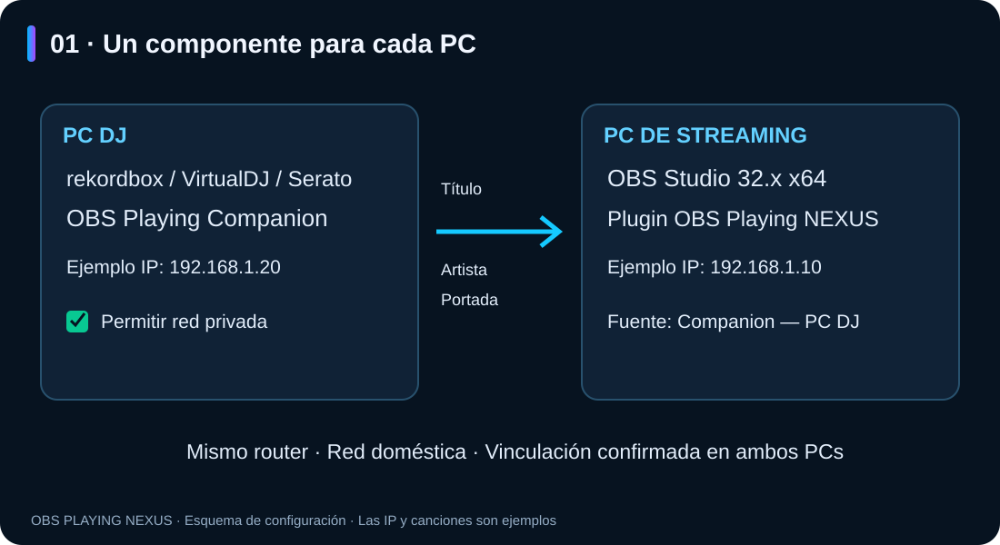
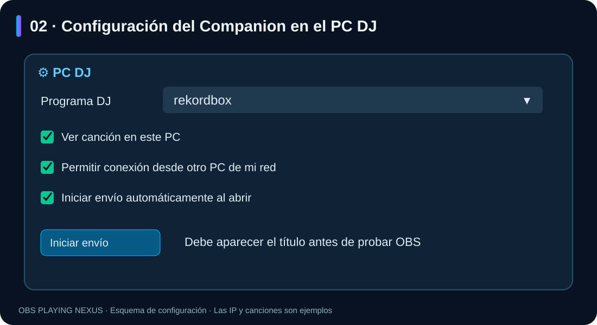
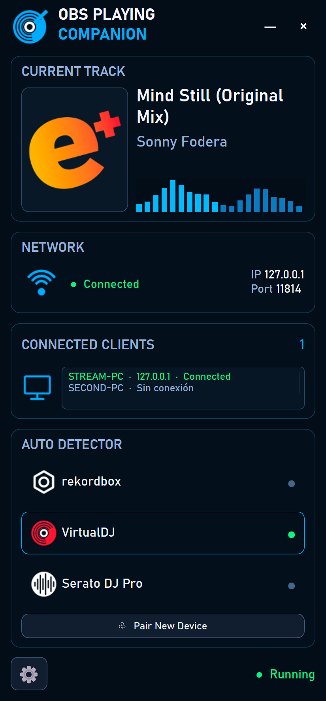
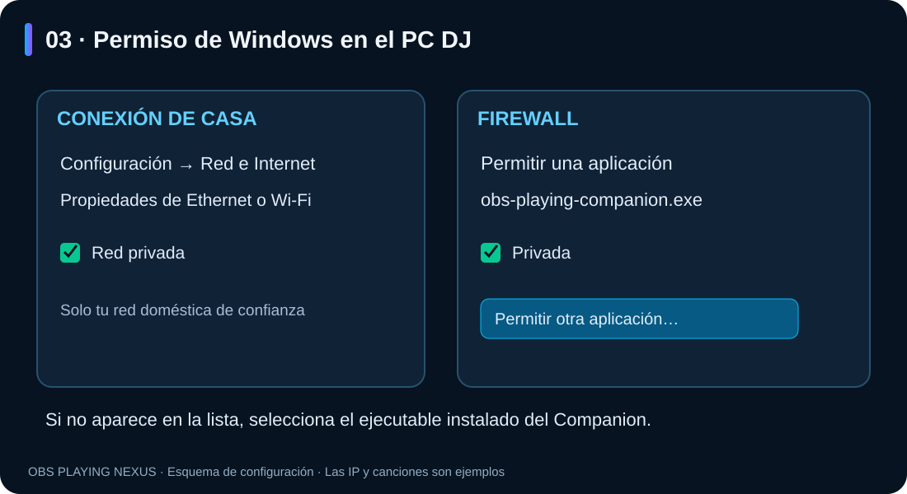
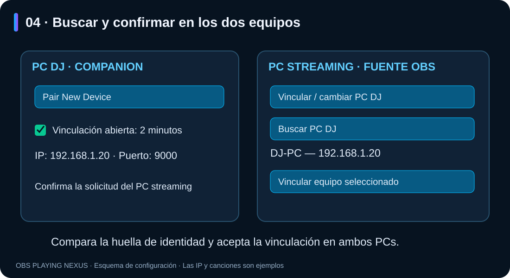
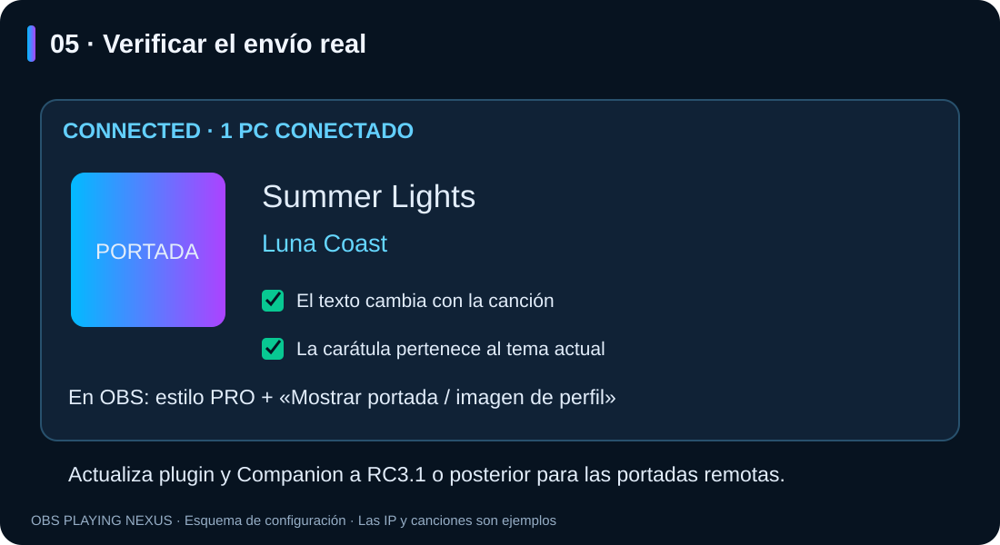

OBS Playing NEXUS — configurar Companion entre dos PCs
Guía ilustrada · Windows · RC3.1
Español · English
Puedes abrir README.html con doble clic para leer esta guía con imágenes en el navegador, sin conexión a Internet. Conserva la carpeta imagenes junto al README.
1. Qué se instala en cada ordenador
- PC DJ: tu programa DJ y OBS Playing Companion.
- PC de streaming: OBS Studio 32.x x64 y el plugin OBS Playing NEXUS.
- Ambos PCs deben compartir tu red doméstica. Evita la red de invitados y una VPN que cambie la ruta entre estos equipos durante la configuración.
- Para usar las carátulas remotas, actualiza ambos componentes a RC3.1 o posterior.

El mismo instalador ofrece las dos opciones: elige PC DJ · Companion en el ordenador DJ y PC streaming · Plugin OBS en el ordenador de emisión. El Companion crea un acceso directo en el escritorio. El instalador solicita la confirmación de administrador de Windows cuando la instalación del plugin lo requiere. Cierra la aplicación correspondiente antes de actualizarla.
2. Comprobar primero la lectura del programa DJ
En el PC DJ:
- Abre el Companion desde el escritorio y tu programa DJ.
- Pulsa ⚙ Configuración y dispositivos y entra en PC DJ.
- En Programa DJ, selecciona rekordbox, VirtualDJ o Serato. «Detectar automáticamente» también está disponible; selecciona uno si hay varios programas reproduciendo simultáneamente.
- Activa Ver canción en este PC y reproduce una canción.
- Comprueba que aparecen título y artista en CURRENT TRACK.

Ver canción en este PC permite comprobar la lectura aunque todavía no haya ningún receptor conectado. Si no hay un receptor ni vista local, el detector puede permanecer inactivo. «Esperando canción» en ese estado no demuestra un fallo.
En Serato 4.0.10, activa el dispositivo de OBS Playing en Setup → Expansion Packs → External Control. La lectura automática de Rekordbox depende de la versión y del modo de reproducción; los modos de historial son alternativas distintas y pueden actualizarse más tarde.

Captura de ejemplo del banco local, con VirtualDJ y datos ficticios. La IP 127.0.0.1 que aparece en esta captura sirve para un solo ordenador; para dos PCs debes utilizar la dirección local real del PC DJ, como explica el siguiente paso.
3. Dar permiso de red en Windows
En tu red doméstica de confianza, comprueba en cada PC que la conexión está marcada como Privada en Configuración → Red e Internet → propiedades de la conexión Ethernet o Wi-Fi.
En el PC DJ:
- Abre Seguridad de Windows → Firewall y protección de red.
- Entra en Permitir una aplicación a través del firewall → Cambiar configuración.
- Busca OBS Playing Companion o
obs-playing-companion.exey permite la aplicación en Privada. - Si no aparece, pulsa Permitir otra aplicación → Examinar y selecciona el ejecutable instalado. La ruta predeterminada es:
%LOCALAPPDATA%\OBS NEXUS\OBS Playing Companion\obs-playing-companion.exe
El permiso «Privada» solo se aplica si la conexión de ese PC también está clasificada como privada. La confirmación de administrador pertenece a Windows. El instalador de esta versión no crea reglas de firewall automáticamente.
Consulta las instrucciones oficiales de Microsoft para permitir una aplicación y la explicación de redes privadas y públicas.
4. Permitir la vinculación desde el PC DJ
- Pulsa Pair New Device en la pantalla principal del Companion.
- Si hay varias conexiones de red, elige la que comparte router con el PC de streaming.
- La vinculación queda abierta durante dos minutos. Mantén el Companion abierto.
- En NETWORK, anota su IP local y su puerto, normalmente 9000. Ejemplo:
192.168.1.20y9000. Cada equipo tiene su propia dirección.
Este botón prepara el envío y la vinculación por la red local. Si haces los ajustes manualmente, activa Permitir conexión desde otro PC de mi red y pulsa Iniciar envío. La dirección anunciada debe ser la IP real del PC DJ.
5. Vincular desde OBS en el PC de streaming
- Añade o abre las propiedades de una fuente OBS Playing NEXUS.
- En Programa DJ, selecciona Companion — PC DJ.
- Desactiva Tema de prueba (ficticio) durante esta comprobación.
- Pulsa Vincular / cambiar PC DJ → Buscar PC DJ.
- Selecciona el nombre del otro equipo y pulsa Vincular equipo seleccionado.
- Compara la huella de identidad mostrada y confirma la solicitud en ambos PCs.

La vinculación guarda el destino y permite reconectar. No hace falta copiar códigos para este procedimiento. Si caducan los dos minutos, vuelve a pulsar Pair New Device y repite la búsqueda.
6. Verificar título, artista y carátula
- El Companion debe mostrar Connected y al menos 1 PC conectado.
- OBS debe mostrar el mismo título y artista que el PC DJ.
- Cambia a otra canción y comprueba que OBS se actualiza.
- Para comprobar la carátula, elige un estilo PRO, activa Mostrar portada / imagen de perfil y reproduce una canción con portada disponible.
- La portada puede aparecer después del texto. RC3.1 la envía cuando está disponible y la asocia a la canción correcta.

Si no hay portada, se utiliza la imagen de perfil de Twitch si tienes activada esa alternativa y la cuenta conectada en OBS. Los estilos clásicos no llevan portada. El Companion no envía la canción de audio: transmite sus datos y su imagen.
7. Inicio, reconexión y cambio de ordenador
- En el Companion del PC DJ, activa Iniciar envío automáticamente al abrir para no tener que pulsar «Iniciar envío» cada vez que abras la aplicación.
- Este ajuste actúa al abrir el Companion; no configura el inicio de Windows.
- La fuente de OBS utiliza la vinculación guardada e intenta recuperar una conexión interrumpida. La identidad del PC DJ debe seguir coincidiendo.
- Para cambiar de PC, usa Vincular / cambiar PC DJ. Puedes retirar la vinculación local con Olvidar vinculación anterior.
- En el Companion del PC DJ, Revocar vinculación seleccionada retira el acceso del equipo anterior. Olvidar un destino local no revoca por sí solo su acceso remoto.
- Si cambia la IP del PC DJ, vuelve a buscarlo y vincularlo.
8. Solución de problemas
| Síntoma | Comprobación |
|---|---|
| No aparece título en el Companion | Selecciona el programa, activa «Ver canción en este PC» y reproduce una canción. Comprueba también su versión y permisos de lectura. |
| OBS no encuentra el PC DJ | Abre de nuevo la ventana de dos minutos; revisa misma red, IP anunciada, red privada y permiso del Companion en el firewall. |
| El Companion no aparece en el firewall | Añade manualmente su ejecutable mediante «Permitir otra aplicación». |
| Aparece el PC pero falla al vincular | Compara la identidad y acepta la solicitud en los dos equipos antes de que caduque. |
| OBS indica que no hay perfil vinculado | Completa «Vincular / cambiar PC DJ» desde esa fuente de OBS. |
| Hay varios programas DJ reproduciendo | Selecciona expresamente el programa en el Companion. |
| Hay texto pero no carátula remota | Actualiza plugin y Companion a RC3.1 o posterior; comprueba la portada en el PC DJ y las opciones de portada de un estilo PRO. |
| Se ve siempre una canción de ejemplo | Desactiva «Tema de prueba (ficticio)» en OBS. |
| Se interrumpe al cambiar de red | Comprueba la IP actual y vuelve a buscar el PC DJ; revisa VPN y red de invitados. |
Para solicitar ayuda, indica versiones de Windows/programa DJ, IP y puerto locales y el mensaje visible. No compartas códigos de vinculación, archivos de perfil .pcs, contraseñas ni credenciales.
Las ilustraciones numeradas son esquemas de los pasos. La imagen del dashboard es una captura real con datos de prueba. Guía de configuración de OBS Playing NEXUS.